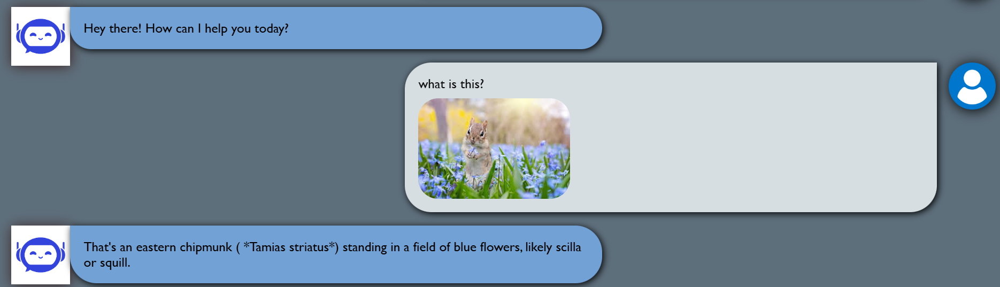

We're thrilled to announce that QueryQuill now supports voice commands and image recognition! This major update transforms how you interact with our AI assistant, making it more intuitive and accessible than ever before.
Voice Commands: Speak Naturally
With our new voice integration, you can now speak your queries naturally instead of typing them. Simply click the microphone icon and speak your question or command. QueryQuill will process your speech and respond just as accurately as with text input.
Real-time Speech Recognition
95% accuracy with support for multiple languages and regional accents.
Context-Aware Conversations
Maintains context across multiple voice interactions for natural dialogue.
Hands-Free Operation
Optional voice-only mode for completely hands-free interactions.
Image Recognition: Show, Don't Tell
Our new image recognition capabilities allow you to upload photos or screenshots and ask questions about them. QueryQuill can analyze the content of images and provide relevant information or take appropriate actions.
Object & Text Recognition
Identify objects, landmarks, products, and extract text from images (OCR).
Data Visualization Analysis
Understand charts and graphs to extract insights and data points.
Privacy-First Approach
Optional face blurring and sensitive content detection for privacy.
Getting Started
To start using these new features:
- Update to the latest version of QueryQuill
- Grant microphone and camera permissions when prompted
- Look for the new microphone and camera icons in the interface
- Start speaking or upload images to experience the new functionality
We're excited to see how you'll use these new capabilities to enhance your productivity and creativity. As always, we welcome your feedback as we continue to improve these features.
← Back to all posts